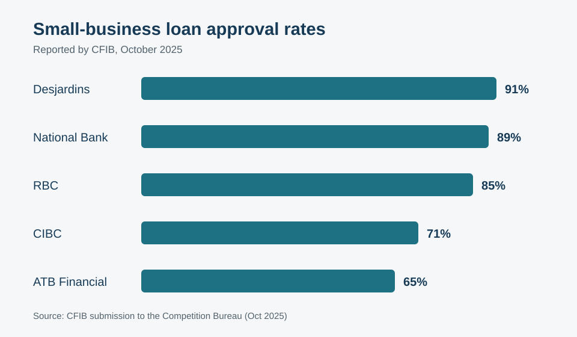

These business plan statistics for Canada answer the questions founders ask before they borrow: how many get approved, what it costs to start, and what lenders actually require. Every figure below comes from a named public source — Statistics Canada, ISED, BDC, or CFIB — with links in the methodology section.
A note on method: this is desk research plus practitioner commentary, not a survey. Where data is dated or thin, we say so. Where no public statistic exists, we say that too.
Use this report as a research starting point, not as a promise of a particular financing outcome. It brings small business financing statistics Canada founders can trace together with small business loan approval rate Canada comparisons and practical questions for reviewing a plan.
Want to see how your own plan stacks up? Run it through our free AI business plan generator — then compare your numbers against these benchmarks.
5 headline findings
- 88% of small-business debt applications are approved — but only 18% of small businesses ever apply. The financing gap is an application gap, not an approval gap. (ISED Credit Conditions Survey 2022)
- Over 75% of CSBFP borrowers would have been denied without the program — yet only 16% of small businesses know it exists, versus 97% of lenders. (ISED CSBFA Review, Feb 2025)
- 63% of new Canadian firms survive five years; 98% survive year one. The killing ground is years two and three. (ISED/Statistics Canada)
- Your approval odds depend on the door you walk through: 91% at Desjardins, 65% at ATB Financial. (CFIB submission to the Competition Bureau, Oct 2025)
- 2 million Canadians are self-employed — and nearly 40% plan to hire or invest this year. (BDC, Feb 2026)
The application gap
In 2022, just 27% of Canadian small businesses requested any external financing, and only 18% requested debt financing — of which 88% was approved, at an average authorized amount of $673,376 (ISED Credit Conditions Survey 2022). The decade average is nearly identical: roughly 24% request debt financing per year, with 87% approved (ISED CSBFA Review, Feb 2025).
Read that twice. The system is not rejecting founders en masse — most founders never walk in. The #1 intended use of debt financing was working and operating capital (45%), the least glamorous and most common need in business (ISED Credit Condition Trends 2009–2022).
Why this matters: if you're hesitating to apply because you assume rejection, the data disagrees with you. What gets applications approved is documentation quality — which is exactly what a proper plan delivers.
The practical lesson is to separate readiness from reluctance. A founder can assemble the proposed use of funds, operating assumptions and supporting evidence before approaching a lender. That preparation makes the request easier to explain and gives an advisor something concrete to question. Our bank-loan business plan guide shows how that evidence fits into a lender-facing document.

The CSBFP awareness gap
The Canada Small Business Financing Program is the single most powerful tool a young Canadian business can access: up to $1.15 million per borrower ($1M in term loans plus a $150K line of credit), open to businesses with $10M or less in revenue, across nearly all industries (ISED CSBFA Review, Feb 2025). Since 1999 it has backed 200,000+ loans worth almost $27 billion; from 2019–2024 alone, 26,000+ loans totalling $6.67 billion (ISED CSBFA Review, Feb 2025).
Two facts make this urgent: over 75% of CSBFP borrowers say their financing would have been denied without the program, and nearly 70% of loan value went to startups less than a year old. And yet only 16% of small businesses know the program exists, versus 97% of lenders (ISED CSBFA Review, Feb 2025).
Why this matters: the best financing program in the country is also the best-kept secret. If your plan doesn't address CSBFP eligibility, you're leaving the strongest card unplayed.
Program awareness is only the beginning. Applicants still need to translate a business idea into a clear request, explain what the financing will purchase and show how the business is expected to operate. Review our CSBFP resource and confirm current requirements with a participating lender before applying.
Survival: the first three years
98% of new Canadian firms survive their first year. By year five, 63% remain; by year ten, 43% (ISED/Statistics Canada, entry cohorts 2002–2014). The highest mortality hits within the first three years. Size at birth matters: firms starting with 1–4 employees have a 62.5% five-year survival rate versus 74.5% for those starting with 20–99 (ISED Key Small Business Statistics 2024). Between 2017 and 2021, Canada created an average of 103,001 small businesses per year — and lost 94,197 (ISED Key Small Business Statistics 2024).
Why this matters: lenders know these curves by heart. A plan that acknowledges early-year risk — with cash buffers and conservative ramp assumptions — reads as honest. One that projects smooth growth from month one reads as fiction.
Survival data should not be turned into a prediction for an individual company. It is a prompt to make the early operating model visible: what must happen, what could be delayed and which assumptions deserve a downside case. The objective is not pessimism; it is an explanation of how management will notice and respond when reality differs from the plan.

The lender lottery
Not all lenders are equal. Reported approval rates: Desjardins 91%, National Bank 89%, RBC 85%, CIBC 71%, ATB Financial 65% (CFIB submission to the Competition Bureau, Oct 2025). Among approved borrowers, 62% had to pledge collateral — 38% pledged personal assets alone or combined with business assets (ISED Credit Conditions Survey 2022). The average interest rate on small-business debt hit 6.2% in 2022, up from 4.1% the year before (ISED Credit Conditions Survey 2022).
Why this matters: shopping lenders is not disloyalty, it's strategy. And the collateral numbers explain why your plan's asset and guarantee sections get read so carefully — the bank is pricing your personal downside.
A comparison should go beyond the headline decision. Founders need to understand the questions each lender asks, the evidence requested and the terms attached to an offer. Present the same internally consistent facts to each institution so that differences in the response are not caused by different versions of the business story. For more context, see how banks evaluate business plans.

The self-employment wave
Self-employment rebounded in 2024 with roughly 70,000 Canadians joining the ranks; 2 million Canadians are now self-employed, and nearly 40% intend to hire or invest in the coming year (BDC, Feb 2026). But there's a counter-current: business exits have outpaced new entries for six consecutive quarters since early 2024, and 55% of owners say they wouldn't recommend starting a business right now (CFIB, ~Apr 2026). Meanwhile 73% of self-employed Canadians finance their business from personal funds, versus 55% of micro-businesses (BDC, Feb 2026).
Why this matters: more Canadians are going out on their own, mostly on their own dime, into a market where exits exceed entries. Planning quality is the differentiator — and it's the cheapest input in the whole venture.
The tension in these findings is useful. Intent to invest can coexist with a difficult operating environment, and personal commitment does not remove the need for careful validation. A plan should identify where personal funds enter, what milestones those funds are meant to reach and what evidence would justify the next commitment.

What it costs to start
The most-cited Canadian figure: microbusinesses (under 10 employees) spent an average of $120,000 to get started; half launched with $100,000 or less; one in ten needed $2,500 or less. Businesses with 11–49 employees averaged $345,000 (BMO/Pollara poll of 501 owners, via The Canadian Press).
Important caveat: that poll is from October 2015 — more than a decade old, and still the most-cited Canadian startup-cost figure because no newer primary-source equivalent exists. Treat it as a directional anchor, not a quote. Build your own startup budget from current supplier quotes; that's what lenders want to see anyway.
A benchmark cannot substitute for a bottom-up budget. Separate one-time purchases from recurring costs, connect each line to a dated quotation where possible and make timing explicit. That approach makes the number auditable and gives the founder a useful purchasing plan rather than a generic average.
The lender's checklist (practitioner commentary)
No public survey publishes "the percentage of lenders that require a business plan" — we looked, and the stat doesn't exist. What does exist is unanimous guidance from BDC, the banks, and advisors: the plan is among the required documents. Here's what two decades of watching credit decisions says they're actually reading for — the framework behind this section comes from Business Plan Essentials:
- Debt-service coverage — can the cash flow carry the payments? This is the first ratio computed.
- The use of funds — every dollar traced to a purpose. Vague "working capital" lines get questioned.
- Collateral and guarantees — what's securing the loan if cash flow stumbles.
- Assumption quality — documented, sourced, conservative. One invented number poisons the whole projection.
- Founder credibility — industry experience and personal investment in the deal.
These items work as a connected review, not a collection of isolated boxes. The narrative should describe the operating choices that drive the forecast, while the forecast should show the financial consequences of those choices. A reviewer should be able to move from the requested funds to the assets or activities they support, and from there to the expected capacity for repayment.
Frequently asked questions
What percentage of small business loans are approved in Canada?
88% of small-business debt financing applications were approved in 2022, with an average authorized amount of $673,376 (ISED Credit Conditions Survey 2022). The decade average approval rate is 87%. Approval rates vary significantly by lender, from 91% (Desjardins) to 65% (ATB Financial) per CFIB's 2025 submission to the Competition Bureau.
How much does it cost to start a business in Canada?
The most-cited figure: microbusinesses averaged $120,000 to launch, with half starting on $100,000 or less (BMO/Pollara, 2015 — dated, but still the benchmark Canadian poll). Costs vary enormously by industry and model. Build your startup budget from current supplier quotes rather than relying on averages.
What is the Canada Small Business Financing Program (CSBFP)?
A federal program where the government shares loan losses with lenders, making banks willing to lend to young businesses: up to $1.15M per borrower ($1M term loans + $150K line of credit), for businesses with $10M or less in revenue. Over 75% of its borrowers would have been denied without it — yet only 16% of small businesses know it exists (ISED CSBFA Review, Feb 2025).
What is the five-year survival rate for Canadian businesses?
63% of new firms survive five years; 98% survive the first year; 43% make it to ten (ISED/Statistics Canada). Mortality is highest in years two and three, and smallest startups (1–4 employees) survive at lower rates (62.5%) than larger ones.
Do I need a business plan to get a loan in Canada?
No public statistic measures how often lenders require one — but BDC, the major banks, and advisors all list it among standard application documents, and weak documentation is a known friction point. Practically speaking, for term loans, CSBFP-backed borrowing, and investor rounds, a lender-grade plan is expected. Our business plan writing services build exactly that — or start free with the AI generator.
Methodology & sources
This report is desk research plus practitioner commentary — not a survey. Figures are reproduced exactly as published; practitioner observations are labeled as such.
- ISED, Credit Conditions Survey 2022 (data year 2022): ISED — Credit Conditions Survey 2022
- ISED, CSBFA Comprehensive Review Report 2019–2024 (Feb 10, 2025): ISED — CSBFA Comprehensive Review 2019–2024
- ISED, Small Business Credit Condition Trends 2009–2022: ISED — Small Business Credit Condition Trends 2009–2022
- CFIB submission to the Competition Bureau (Oct 31, 2025): CFIB — Competition Bureau Submission 2025
- BDC self-employment study (Feb 11, 2026): BDC — Self-Employment Study 2026
- ISED/Statistics Canada, Canadian New Firms: Birth and Survival Rates 2002–2014 (May 2018): ISED/Statistics Canada — New Firm Birth and Survival Rates
- ISED, Key Small Business Statistics 2024: ISED — Key Small Business Statistics 2024
- BMO/Pollara microbusiness startup-cost poll via The Canadian Press (Oct 7, 2015 — dated): BMO/Pollara — Microbusiness Startup Costs
- CFIB "Canada's Entrepreneurial Drought, Part 1" via Canadian Manufacturing (~Apr 2026): CFIB — Canada’s Entrepreneurial Drought, Part 1

Written by Atul Jagga, CPA Ontario
Founder of The Biz Plans, Toronto. MBA Finance & Strategy (UBC); 20+ years in corporate finance and consulting involving RBC, BMO, and CIBC; author of Business Plan Essentials: Building Your Business Plan (2025). Get the book · Professional plan writing services
Related: Free AI Business Plan Generator · Business Plan Writing Services · How Banks Evaluate Business Plans